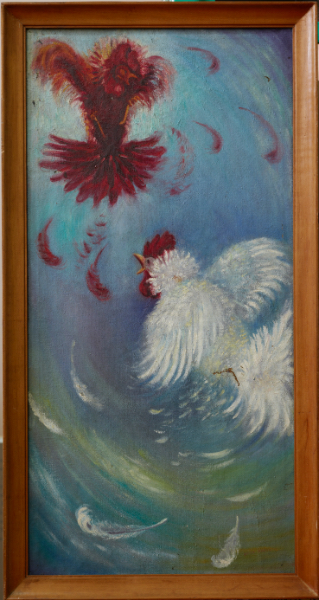
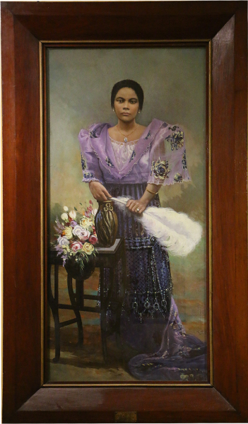
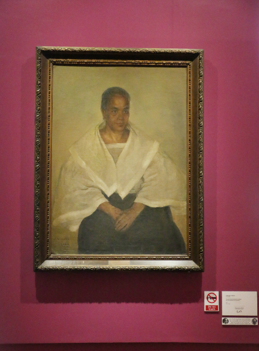

Different Art Works

“Sa Pula, Sa Puti,” 1949
“Hills of Nikko,” 1964

“Portrait of Serapia N. Santos Y Aduna (1881-1829),” 1932

“Portrait of Laureana Novicio y Ancheta with the dedication ‘To my mother’” 1897
“Arrival and Departure,” 1980
“Mother and Child,” 1950
“Lualhati,” Undated
“Fiesta I and II,” 2008
“La Venganza Dela Madre (The Mother's Revenge),” 1894
“El Gobernador Y El Obispo [Don Luis Perez Dasmariñas and Fray Domingo de Salazar],” 1896